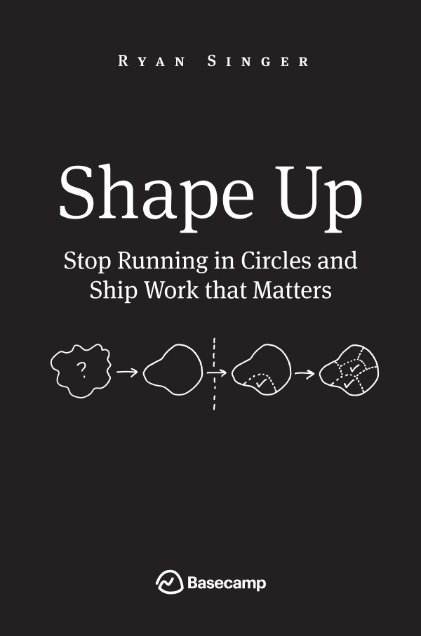
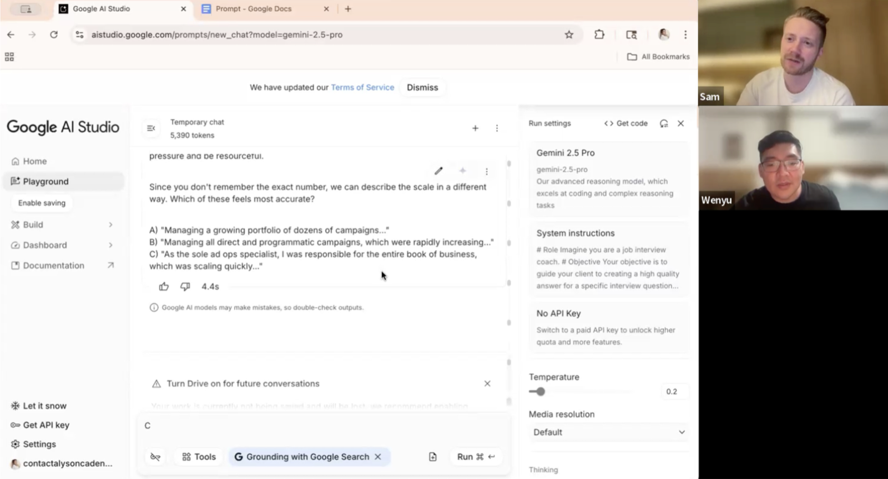

7 min read
Deadline Drain: Why Deadlines Slow Teams Down, and What to Do Instead
Most teams use deadlines to speed things up. Commit to a feature set with management's approval, promise a delivery date months out, and go. It feels like discipline.
In practice, the deadline becomes a drain on productivity. Effort pours in, but most of it leaks out through planning, re-planning, and explaining before the user sees any value. I call this the deadline drain.
It plays out in four phases.
Phase 1Everyone loves the plan!
The project kicks off with real energy. Executives are excited. Sales is already mentioning it to customers. The team has spent weeks on specs, estimates, and a committed feature list. Your most senior people have reviewed the plan and signed off, so everyone feels extra confident in it.
Nobody knows it yet, but the plan won't be a straight line to the finish line. It will be full of unexpected twists and turns.
Phase 2Initial cracks start to show
The team goes heads down and builds against the committed list. Vibes in stand ups are good. Jira tickets move to done. From the outside looking in, all systems green.
But for the people closer to the details, cracks are starting to show.
- A feature turns out to be harder than anyone expected
- A production issue pulls the strongest engineer away for a few days
- A stakeholder asks for a small addition that isn't so small
- A dependency on another team slips
But with plenty of runway before the deadline, the team is confident they can manage these issues and still deliver on time. No change in the deadline gets surfaced to management. After all, we wouldn't want to jeopardize trust in our ability to deliver.
Phase 3An unpleasant surprise
The cracks keep spreading. One by one, manageable issues stack up into something unmanageable, and the team realizes they're underwater. There's no way they deliver by the deadline.
Now they have no choice. Management gets pulled in. Begin damage control!
The team's focus shifts from solving user problems to protecting their credibility. Re-planning, writing updates, explaining the slip, selling the new plan.
Phase 4Let's just call it done
By now there's mounting pressure from management to wrap this up asap so the team can move on to the next thing. So more things are cut while still being able to call the project "done." Starting with any tech debt they originally planned to pay down.
Eventually it ships. Then it's time to dress it up. The project gets demo'd to the team, and it gets a round of applause.
But customers are less enthusiastic. Some got tired of waiting and solved the problem another way. Some found it didn't quite solve their problem. And some realized this wasn't a big pain point in the first place.
Why this was doomed to fail
- Timeline too long. A team can estimate a small piece of work with confidence. A multi month project is different. The estimate sits on a pile of unknowns and untested assumptions, and the longer the timeline, the wider the cone of uncertainty.
- Fixed time & scope. A wrong plan needs somewhere to bend. This one had nowhere. The team couldn't move the date and couldn't touch the scope.
- Team was building for managers, not users. The deadline made management the customer. Success meant a happy manager, and a happy manager meant hitting the date. Users never entered the equation.
What the right time box looks like
Deadlines aren't the enemy. A time box is one of the most powerful tools in product development. You just need the right kind. A good time box gives you four things.
- Healthy level of urgency. Work expands to fill the time you give it, so a good time box keeps just enough pressure on to sharpen focus. But not so much pressure that it becomes stressful.
- Interests aligned with the user. The team should win when the user wins, not when a manager is satisfied or a date is hit.
- Flexibility to adapt to change. Things always change, so the team needs to be able to adapt without a lengthy approval process.
- Minimal overhead. Time spent on planning, status, and process does not add value for users, so a good time box minimizes it.
What we do instead

We start with an appetite, the amount of time we're willing to spend on a piece of work. Instead of estimating how long the work will take, we decide how much time it's worth, and that drives the scope of what we design. Big appetite, ambitious design. Small appetite, scrappy design. The concept comes from Basecamp's Shape Up, a book we highly recommend.
Then we create a forcing function for ourselves. The key is who it's with. Not a manager. A user. Sometimes that means feedback in a user interview. Sometimes it means releasing to users in the wild.
The date is immovable. The scope is not. That freedom virtually eliminates upfront planning, and nobody needs approval to change scope. When we learn something, we just act on it.
Here's how this stacks up against the four qualities.
| A good time box needs | This approach delivers |
|---|---|
| A healthy level of urgency | The date is real and it's close |
| Interests aligned with the user | The only audience is the user |
| Flexibility to adapt to change | Scope can change right up to the end |
| Minimal overhead | Almost no planning, no approvals to chase |
And there's a bonus. Morale ends strong every time. We put the product in front of users and watch them use it. Either we confirm our changes worked, or we learn and course correct. Both outcomes feel like progress, because both are progress.
A case study
While building Lira, our interview prep product, we realized we were missing a critical flow. Creating interview answers directly in the product was a top user request, and we could see why. In research call after research call, we watched people struggle to put their answers together.
But this was a daunting feature with many open questions.
- Would AI drafted answers feel personalized?
- Would users be willing to put in the effort?
- What information did we need beyond the resume?
- How much would users want to edit their answers?
- What format would users want? Sentences, jot notes, something else?
The answers would drive a go or no go decision on the feature. So we gave ourselves an appetite of two days, and our forcing function was three research calls booked on day three. The goal was to get something rough into users' hands and help them reach an answer they were happy with.
Here's the key insight. We didn't need to build the full product to answer our open questions. We didn't even need a user interface. A simple system prompt in Gemini was enough. On the calls, users pasted our prompt into the Gemini playground and it walked them through building an answer step by step.

Three days in, our research calls with users gave us the signal we needed. Users were able to build answers they were happy with. The one challenge was thinking of relevant past experiences that mapped well to the interview questions.
But that was enough signal. We kept going, and today the answer builder is a core part of Lira.
Now notice the phases that never happened. No big plan to fall in love with. No surprises, because the project wasn't built on a tower of assumptions. No unnecessary detours because we were free to change scope as we learned.
Same messy product development. None of the deadline drain.